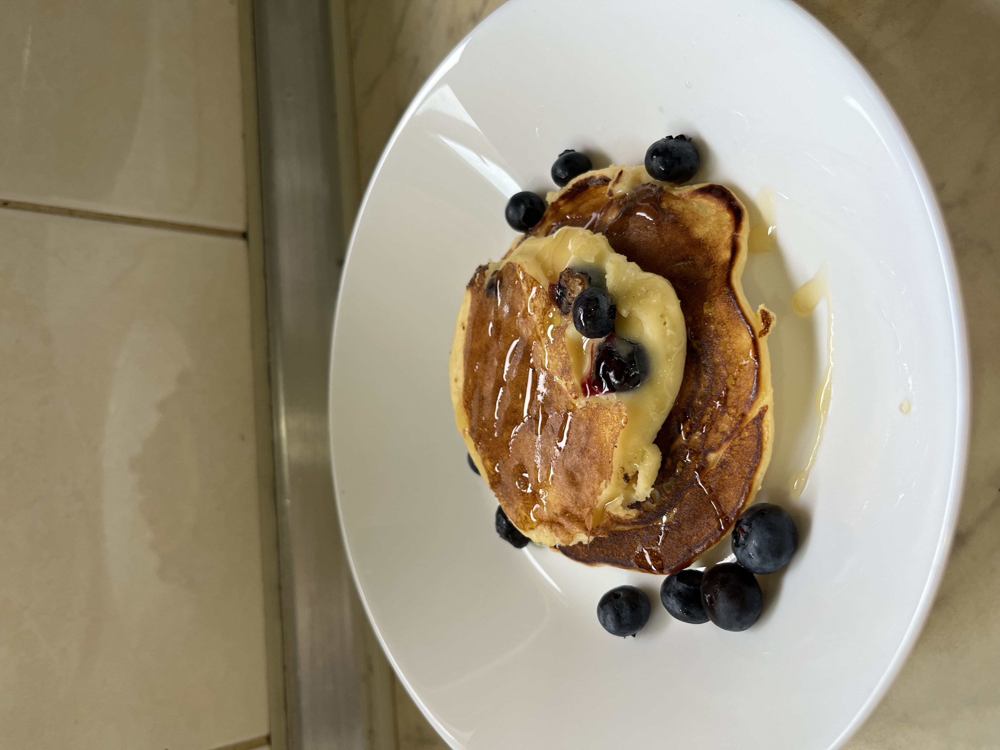

Blueberry Pancakes

Description
Can you tell what my favorite breakfast food is or do I have to telepathically infect you with my love of flat cakes through the screen? Makes 6 blueberry pancakes; all measurements are in line with the agak agak (follow your heart) philosophy.
Ingredients
- 1 cup flour
- 3 tbs sugar (sugar cuts through the tang of yogurt better, but I think honey already does the trick as a sweetener!)
- 1 tsp baking powder
- 2 eggs
- 1 cup greek yogurt
- Pinch of salt
- As many blueberries as you see fit!
Steps
- Mix well and fry batter on the stove!
- Drizzle any syrup of your choice (optional), and serve!